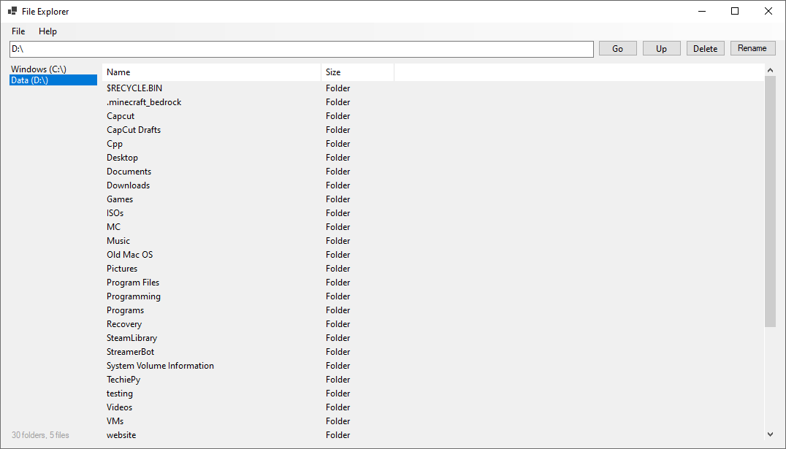

Twitch streamer, programmer
A Windows Explorer recreation in C#. Complete with File & Folder management, less resource usage and a simpler design than the original File Explorer.
Source code: <not available yet>
